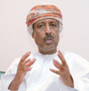
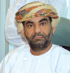
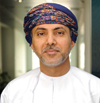
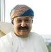
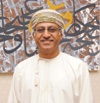
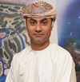
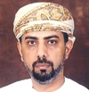

|
|
|
|
|
| |
| |
| |
| |
| |
|

|
|
Chief Guest
HE Darwish bin Isma’eel bin Ali
Al Balushi
Minister Responsible for
Financial Affairs |
|
|
|
|
|
|
|
Debate Moderator
Tim Sebastian
Presenter The Doha Debates &
Former Presenter BBC HARDtalk |
| |
|
|
|
|
|
Panelists (Session 1) |
|
|
|
|
|
 |
|
HE Dr Salem Ben Nasser Al
Ismaily
Chairman, Public Authority for
Investment Promotion
& Export Development
HE Dr Salem holds a ministerial
rank and is responsible for
promoting investment into the
Sultanate and growing Omani
Exports. These two goals are
seen as being important for
diversifying the base of Oman’s
economy. Dr Ismaily represents
Oman at numerous international
forums and has authored a book
on Arabic culture.
|
|
|
|
|
|
 |
|
HE Ahmed Hassan Al-Dheeb
Undersecretary, Ministry of
Commerce and Industry
HE Dheeb plays an important part
in policy making as the second
highest ranking official in the
Ministry of Commerce and
Industry after the Minister. He
has been with the Ministry for
over five years and has played
an important role in initiatives
like signing of the Free Trade
Agreement between the US and
Oman.
|
|
|
|
|
|
 |
|
Hussain Jawad
Chairman, WJ Towell
As the chairman of W J Towell,
Hussain Jawad heads a broadly
diversified group which is
considered as one of the oldest
family businesses in the Middle
East. Jawad also serves as the
Chairman of Oman National Dairy
Products Company Limited.
Established in 1866 by Mohammed
Fadhel and Sir William Jake
Towell as a limes and dates
export business, the company has
played a leading role in Oman’s
development. The group's
commitment to the national goals
of diversification and
broadening of the industrial
base is evident in its expanding
range of activities.
|
|
|
|
|
|
 |
|
Hani Al Zubair
Executive Chairman, Zubair
Automotive Group
Hani Zubair is a second
generation scion of one of the
largest business families in the
Sultanate. The Zubair Group has
diversified business interests
like auto, hospitality, oil and
gas, finance etc. Hani Zubair
heads the automotive business of
the group. He has been involved
with promoting jobs and
entrepreneurship for Omani
nationals as the Chairman of
Sharakah, an organisation that
funds new start ups. He was on
the board of Young Arab Leaders.
|
|
|
|
|
|
 |
|
Adil Taqi
CEO, Muriya Tourism Company
Adil is the first Omani CEO of
Muriya Tourism Development
Company, one of the biggest
tourism development companies in
the Sultanate. Formerly with
famed Gulf Developer Damac, Taqi
has years of prime Real Estate
experience and held senior
positions at large corporations
locally, including Ahlibank and
PDO. Established in Oman in 2006
as a joint venture between
Egypt's Orascom Hotels &
Development and Omran, Muriya is
responsible for pioneering new
developments in the Sultanate
including the highly anticipated
and ambitious "Jebel Sifah" and
"Salalah Beach" projects.
|
|
|
|
|
|
 |
|
Dr Hatem Al Shanfari
Faculty Member at the Department
of Economics and Finance, Sultan
Qaboos University
Hatem Al-Shanfari has diverse
experience that span into
academia, business, and civil
society in Oman. He is the
faculty member in the Department
of Economics and Finance, Sultan
Qaboos University, member of the
board of governors of the
Central Bank of Oman, vice
chairman of Omani Economic
Association, chairman of Gulf
Investment Services Company,
chairman of the board of
directors of Gulf Baader Capital
Markets Company, board member of
Galfar Engineering & Contracting
Company, and member of the
Advisory Council of the
Management Centre at the
American University in Cairo.
|
| |
|
|
|
|
|
Panelists (Session 2) |
|
|
|
|
|
|
|
Dr Mohamed Abdulaziz Kalmoor
CEO, Bank Sohar
Dr Mohamed Abdulaziz Kalmoor has
been an integral part of the
banking landscape in Oman for
over three decades. Prior to
joining Bank Sohar he was Chief
Executive Officer of Oman
Finance and Investment Company
and held the position of
Executive Vice President of the
Central Bank of Oman from 1995
to 2000. A PhD holder in
Economics from University of
Colorado, Dr Kalmoor's has been
a member of a number of national
and specialist committees, among
them the Board of the Capital
Market Authority, Higher
Education Council, Indian Ocean
Rim Association for Regional
Cooperation as well as a number
of economic and financial
committees.
|
|
|
|
|
|
|
|
Ross Cormack
CEO, Nawras
Ross Cormack has been at the
helm of Nawras, the Omani Qatari
Telecommunications Company,
since its inception in December
2004. Nawras was awarded the
second fixed licence in Oman in
2009, and launched its
international gateway in April
2010, its corporate fixed and
broadband services in May 2010,
and its residential fixed and
broadband services in June 2010.
Following a successful IPO,
Nawras is listed on the Muscat
Stock Market (MSM) under the
“nwrs” ticker since 1 November
2010. Ross has been named
Outstanding Leader of the Year
at the third TMT Finance &
Investment Awards Middle East,
held in Dubai in 2011, and named
‘Telecommunication Man of the
Year 2009’ at the Pan Arab Web
Awards.
|
|
|
|
|
|
|
|
Faisal Al Lawati
Executive Director, Genetco
He heads the operation of
Genetco, one of the largest and
most diversified companies in
trade and engineering in Oman.
Genetco was established in 1971
as a partnership between W J
Towell & Co and Murtadha Hassan
Ali. In 38 years, Genetco has
gained significant reputation
and market share in Retail,
Distribution, Engineering
Projects, Electro Mechanical
Services, and Office Automation.
An affiliate to the Towel Group
of companies, Genetco is a 100
per cent Omani company.
|
|
|
|
|
|
|
|
Dr Brian D. P. Buckley
CEO & General Manager, Oman LNG
Brian was appointed CEO of Oman
LNG, the largest public/private
joint venture in the Sultanate
of Oman, in February 2007. He
joined Royal Dutch Shell in
1980. His career has spanned
management and executive
positions in oil refining, gas,
personnel, and major projects’
screening and execution in the
oil, gas, chemicals and metals
sectors. He has worked in
Europe, the Caribbean, South
America, Asia, Africa and the
Middle East. Oman LNG is a
limited liability incorporated
joint venture company
established by Royal Decree in
1994. It produces and sells
liquefied natural gas (LNG) and
a byproduct, Natural Gas Liquids
(NGLs).
|
|
|
|
|
|
|
|
|
|